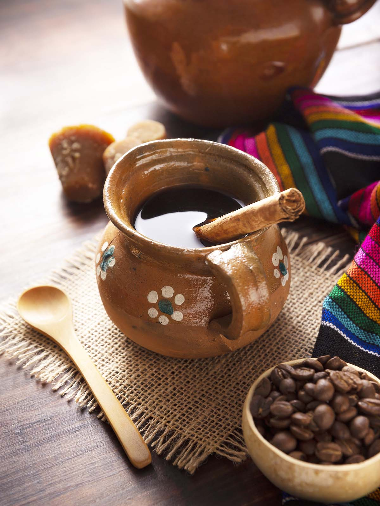
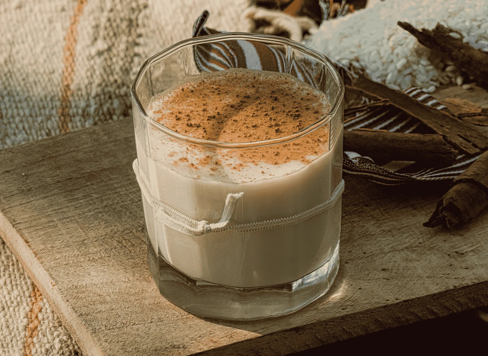
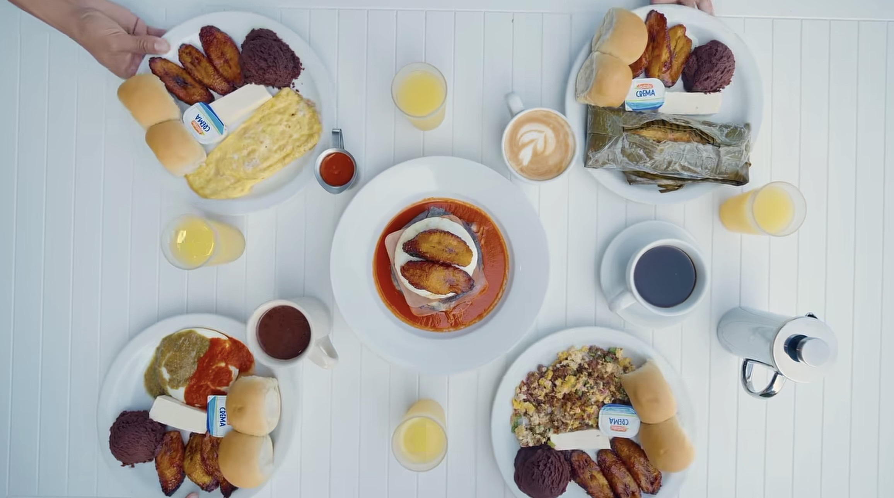
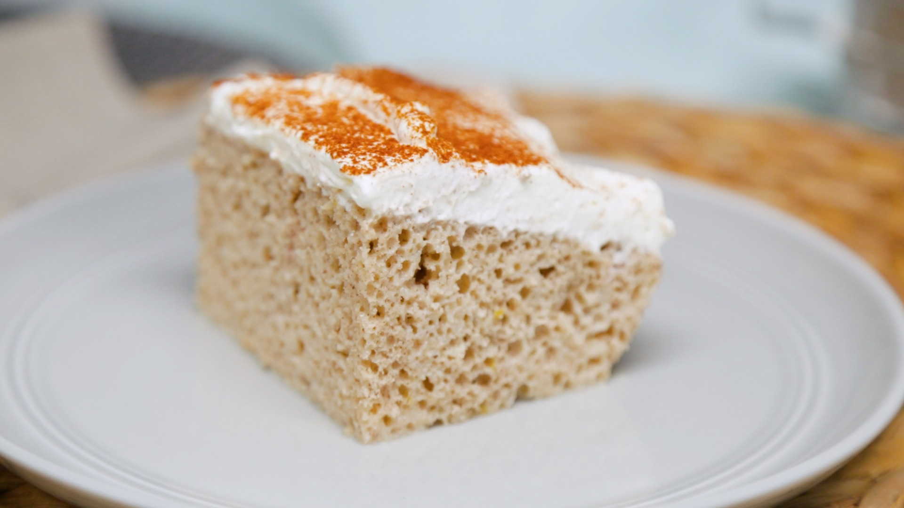

Café tradicional preparado en olla de barro con canela. El favorito de la casa.
Nuestro menú
Café, comida típica y postres de la casa
Una carta que combina café de especialidad con lo mejor de la cocina salvadoreña. Precio promedio entre $4 y $12.

Café & bebidas calientes
Con grano salvadoreño de altura
Café de especialidad
Preparaciones de filtro y espresso con grano de altura salvadoreño.
Chocolate caliente
Chocolate artesanal espeso, ideal para la tarde fresca de la montaña.

Bebidas frías & cocteles
Para acompañar la vista
Horchata de morro
La mejor del paísFría y cremosa, con cacao y especias. Muchos la llaman la mejor de El Salvador.
Jugos naturales
Jugos de frutas de la temporada, recién preparados.
Sangría
Sangría de la casa para compartir mientras ves el atardecer.
Mimosa
Espumosa y refrescante, perfecta para el desayuno con vista.
Bellini
Refrescante coctel de durazno, ideal para la tarde.

Comida típica & carnes
Platillos fuertes para disfrutar
Pupusas de la casa
RecomendadoTradicionales y con variedades especiales. Hechas a mano al momento.
Ceviche
Ceviche fresco, ideal para abrir el apetito con la brisa del lago.
Churrasco
Corte de carne a la parrilla con guarniciones de la casa.
Costilla de cerdo en salsa BBQ
Costilla tierna bañada en salsa barbacoa de la casa.
New York steak
Corte New York a la parrilla, con guarnición a elección.

Postres artesanales
Para cerrar con dulce
Flan de queso
Flan cremoso de queso con caramelo. Clásico de la casa.
Tres leches de horchata
EstrellaEl clásico tres leches con un giro de horchata salvadoreña.
Love cake
Bizcocho húmedo con frutos secos y especias. Para enamorar.
Carrot cheesecake
Cheesecake de zanahoria, cremoso y con ese toque especiado.